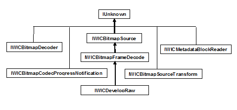

The following tables show the interfaces implemented by Windows Imaging Component (WIC) decoders, and the class diagram shows the inheritance hierarchy.
Container-Level Decoder Interfaces
| Interface | Responsibilities | Implementation |
|---|---|---|
| IWICBitmapDecoder | Container-level services | Required |
| IWICBitmapCodecProgressNotification | Progress notification & cancellation support | Recommended |
| IWICMetadataBlockReader | Metadata enumeration | Optional (Required only for formats that support container-level metadata) |
Â
Frame-Level Decoder Interfaces
| Interface | Responsibilities | Implementation |
|---|---|---|
| IWICBitmapFrameDecode | Frame-level services | Required |
| IWICMetadataBlockReader | Metadata enumeration | Required |
| IWICBitmapSourceTransform | Native decoder transforms | Recommended |
| IWICDevelopRaw | Raw processing services | Required for Raw formats only |
Â

Conceptual
Implementing a WIC-Enabled Decoder
Implementing IWICBitmapDecoder
How to Write a WIC-Enabled CODEC
Windows Imaging Component Overview
Â
Â